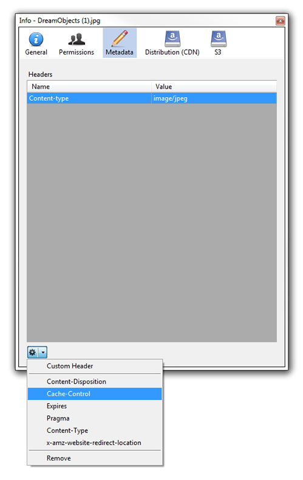
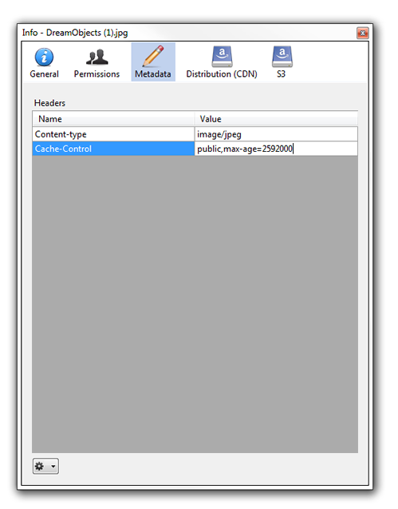
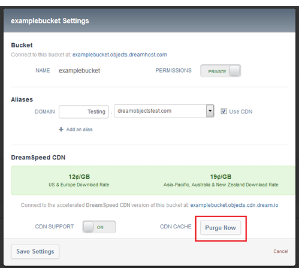

DreamSpeed CDN Advanced Cache Settings
Overview
Your content is stored in the DreamSpeed CDN cache for 30 days by default, and you have full control over the cache settings using standard HTTP caching headers. This allows you to control how long your content is stored in the cache as well as in the web browser.
HTTP headers
You can set four different types of HTTP headers which will have different effects on the CDN and on web browsers. If you use more than one type, they are prioritized in the order listed below:
| HTTP header | Description |
| Surrogate-Control: max-age=(time in seconds) | Only visible to DreamSpeed CDN and is stripped before reaching the browser. |
| Cache-Control: s-maxage=(time in seconds) | Same as Surrogate-Control, except the header is not stripped and is respected by DreamSpeed CDN, as well as all cache services, but not the browser. |
| Cache-Control: max-age=(time in seconds) | Respected by all cache services and the browser. |
| Expires: (HTTP Date) |
|
Do not cache
You can specify the following:
- a file to not be cached by setting Cache-Control: private
- the Expires header to a date in the past
Setting up HTTP headers with Cyberduck
Cyberduck is a free file transfer app that works with DreamObjects and also allows for setting Cache-Control headers.
Visit the following article for further instructions on how to connect with Cyberduck:
Open Cyberduck and select a file.

Click the Get Info button.
Select the ‘Metadata’ option.
Select the dropdown option to the bottom left and choose ‘Cache-Control’.
Modify Cache-Control or add a new custom header.
Setting up HTTP headers with the Python boto library
The Python library called boto allows you to interact with DreamObjects over its S3-compatible API. Follow the instructions in the Boto article to connect with DreamObjects.
The script below sets the Cache-Control header to a max-age of 2592000 seconds (30 days) for all JPG and PNG files in the bucket you specify:
from boto.s3.connection import S3Connection
# Replace with your DreamObjects access key and secret key
connection = S3Connection('Your_Access_Key', 'Your_Secret_Key',
host='objects-us-west-1.dream.io')
# Change Your_Bucket_Name to the name of the bucket with CDN enabled
bucket = connection.get_bucket('Your_Bucket_Name')
for key in bucket.list():
print('%s' % key)
if key.name.endswith('.jpg'):
contentType = 'image/jpeg'
elif key.name.endswith('.png'):
contentType = 'image/png'
else:
continue
key.metadata.update({
'Content-Type': contentType,
'Cache-Control': 'max-age= 2592000'
})
key.copy(
key.bucket.name,
key.name,
key.metadata,
preserve_acl=True
)
Purge cache
If you make an update to your files stored on DreamSpeed CDN, you’ll want to purge the cache so that it does not serve the stale content. This is easily done through the panel:
Navigate to the (Panel > ‘Cloud Services’ > ‘DreamObjects’) page.
Click the ‘Change Settings’ link for the bucket you want to purge from DreamSpeed CDN.
The Bucket Settings window opens:
Click the Purge Now button and confirm the action in the dialog that appears. The cache clears within 2 seconds and is refreshed the next time someone requests it.